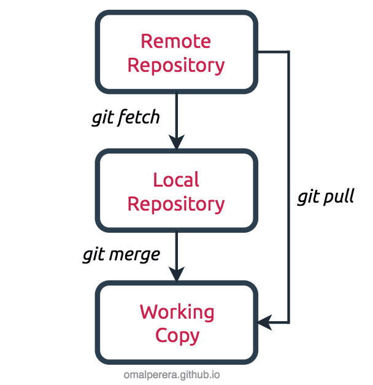

Git nedir?
 Git, yazılım geliştirme süreçlerinde hızlı ve esnek bir şekilde çalışmayı sağlayan bir sürüm kontrol
ve kaynak kod yönetim sistemidir. Git, Linux çekirdeği’nin geliştirilmesinde kullanılmak üzere 2005 yılında Linus
Torvalds tarafından tasarlanmış ve GNU Genel Kamu Lisansı ile özgür yazılım olarak sunulmuştur. Git, projenin anlık
görünümlerini fotoğraf gibi kaydederek verilerini saklar ve bu sayede herhangi bir zamana geri dönebilir veya farklı
dallarda çalışabilirsiniz.
Git, yazılım geliştirme süreçlerinde hızlı ve esnek bir şekilde çalışmayı sağlayan bir sürüm kontrol
ve kaynak kod yönetim sistemidir. Git, Linux çekirdeği’nin geliştirilmesinde kullanılmak üzere 2005 yılında Linus
Torvalds tarafından tasarlanmış ve GNU Genel Kamu Lisansı ile özgür yazılım olarak sunulmuştur. Git, projenin anlık
görünümlerini fotoğraf gibi kaydederek verilerini saklar ve bu sayede herhangi bir zamana geri dönebilir veya farklı
dallarda çalışabilirsiniz.
Git’in en önemli özelliklerinden biri de dağıtık çalışmasıdır. Git ile çalışan her bir proje dizini, internet erişimi ya da merkezi bir depo olmaksızın tüm tarihçeyi tutan ve sürüm kontrol sisteminin tamamını içinde barındıran tam yetkili birer depodur. Aynı projenin birçok depodan birindeki kopyasında yapılan değişiklikler diğerlerine güven temelli bir değerlendirmeyle kabul edilir; Güvenilmeyenden değişiklik alınmaz, o kendi ayrı sürümünü geliştirmeye devam eder.
Git, aslında Cogito veya StGIT gibi düşük seviyeli bir sürüm kontrol sistem motoru üzerine diğerleri tarafından arayüz yazılabilecek şekilde tasarlanmıştır. Ancak çekirdek git projesi doğrudan kullanılabilecek tam bir sürüm kontrol sistemi haline gelmiştir. Git, hem küçük hem de büyük ölçekli projelerde kullanılabilen güçlü ve esnek bir araçtır.
Git komutları ve özellikleri
Repository: Proje dosyalarının uzak bir sunucuda depolandığı yerdir. Genel kullanımda “repo” olarak da kısaltılır.
git branch: Mevcut branch’leri listelemeye veya yeni bir branch oluşturmaya yarar. -a parametresi ile tüm branch’ler listelenir. -d parametresi ile bir branch silinir. Bir isim verilirse o isimde yeni bir branch oluşturulur.Ana branch main olarak adlandırılır.
git commit: Sürüm kontrolüne alınan dosyaları kaydetmeye yarar. -m parametresi ile commit mesajı eklenebilir
git checkout:Belirtilen branch’e veya commit’e geçmeye yarar. -b parametresi ile yeni bir branch oluşturup ona geçilebilir.

Fork: Bir repo’nun kopyasının alınmasıdır. Fork edilen repo üzerinde değişiklikler yapılıp ana repo’ya gönderilebilir.
Pull Request (PR): Fork edilen repo üzerinde yapılan değişikliklerin ana repo’ya gönderilip değerlendirilmesi isteğidir.
git merge: Belirtilen branch’i mevcut branch ile birleştirmeye yarar.
git init: İçinde bulunulan klasörü bir git repo’su haline getirir.
git config: Kullanıcı adı, mail gibi ayarları belirlemeye yarar.
git status: Repo’nun güncel durumunu gösterir.
git add: Belirtilen dosyaları veya klasörleri sürüm kontrolüne almaya yarar.
git rm: Belirtilen dosyaları veya klasörleri sürüm kontrolünden çıkarmaya yarar
git remote: Uzak sunucuları listelemeye veya eklemeye yarar. -v parametresi ile detaylı listeleme yapılabilir. add parametresi ile yeni bir sunucu eklenebilir.
git clone: Bir uzak sunucudaki repo’yu bilgisayara indirmeye yarar. Farklı bir isimle indirmek için sonuna isim eklenebilir.
git push: Yerel repo’daki değişiklikleri uzak sunucuya göndermeye yarar. origin parametresi ile hangi sunucuya, master parametresi ile hangi branch’e gönderileceği belirlenir.
git pull: Uzak sunucudaki değişiklikleri yerel repo’ya almaya yarar. origin ve main parametreleri ile hangi sunucudan ve hangi branch’ten alınacağı belirlenir.
git fetch: uzaktaki bir deponun dosyalarını, anlık görüntülerini ve referanslarını yerel deponuza indiren bir komuttur.
git log: Commit geçmişimizi hashlerle ve commit durumuyla birlikte döndürür.
git stash: Commit etmek istemediğimiz yerde değişiklikleri kaydetmek için git stash komutu kullanılır.
git stash pop: C Git stash kullanılan yerde kaydetme işlemini geri almak için git stash pop komutu kullanılır.
git stash list: Kaydedilen değişiklikleri görmek için kullanılır.
git revert: Commit edilen değişiklikleri geri almak için kullanılır.Commit edilen değişikliği ,tekrar commit ederek siler.
git diff: Mevcut dizin ile staging area arasındaki değişiklikleri gösterir.
git diff HEAD: Son commit işleminden sonra yapılan değişiklikleri gösterir.